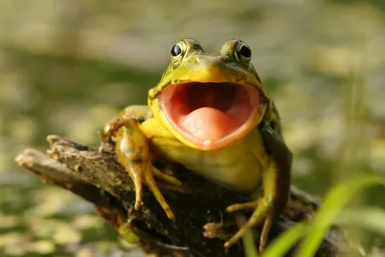
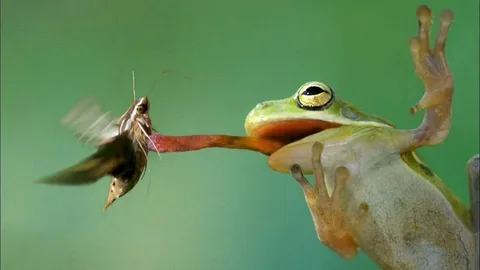

Кто такие лягушки?
Лягушки — это земноводные, известные своими прыжками, кваканьем, выпуклыми глазами и слизистой кожей. Они обитают по всему миру и играют важную роль в экосистемах.
Где живут лягушки?
Лягушки могут жить в самых разных местах: от тропических лесов до сухих пустынь. Большинство видов предпочитают влажные среды, так как они зависят от воды для увлажнения кожи и откладывания яиц.
Что едят лягушки?
Лягушки являются хищниками и в основном питаются насекомыми, червями и мелкими беспозвоночными. Крупные лягушки могут даже есть мелких млекопитающих или птиц!